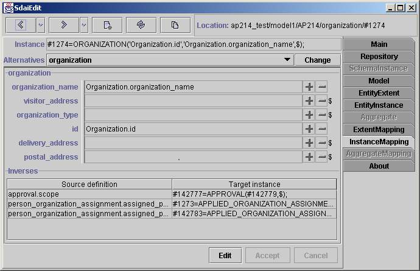

Instance Mapping page

This page shows attributes and other data for one AIM instance in ARM concept.
AIM instancerepresentation in physical file format are shown first. Alternative
view of this instance are below. The current view are showing one. If you
want to change current view you need to choose preferred one from combo box
and press 'Change' button.
Attributes
After that all attributes grouped by ARM entity data types are listed. ARM
entitydata types order are the same as inheritance. From top to bottom. For
complexentity data types and multiple inheritance it is more complicated.
Attributesorder are as originally was written in EXPRESS file. For every
instance thereis four fields in one line. First one is the name of attribute,
no operationson this field available. Second one is the type of attribute.
The type writingis same as in EXPRESS. You can click on this type filed to
see the detailof it. The third field is attribute value with plus and minus
buttons foroperations. If attribute is mapped in several different ways then
all these alternative attributes are listed in following combo box. You will
see values of these alternatives by changing selected alternative. At the
beginning set one if such exist is selected. Second and third fields are
separated with split, so you can enlarge attributevalue view. With plus button
you can set value from sdai clipboard for entitytype and with minus button
you can unset value for all attributes. Fourthfield is for showing is attribute
set or not. If '$' mark is present at the end then attribute is unset else
attribute is set even if no value appear(set with empty string).
Inverses
Here is listed all instances (ARM type and AIM instance pair) from which
this instance is referenced. First column 'Source definition' shows from
which ARM type and its attribute this instance if referenced and second 'Target
instance' is AIM instance. If youare working on schema instance domain then
all inverses from this domainwill be listed here.
Button line
With 'Edit' button you can go to edit mode, than you will be able to edit
attributes. 'Accept' and 'Cancel' will accept or cancel your changes. When
you will be in edit mode you will not be allowed go to other pages before
accepting or canceling changes.